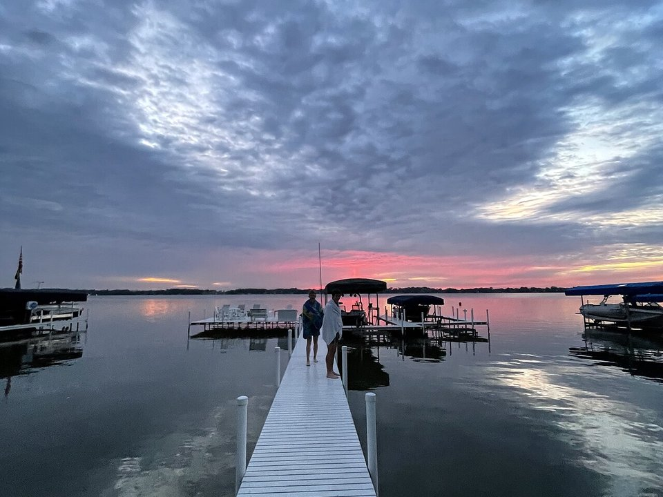

Lakefront · Resort
Oakwood Resort
A lakeside resort with rooms, a restaurant and a tiki bar on Lake Wawasee.
Official details for Oakwood ResortIndiana’s biggest lake, with a seaplane base.
Lake Wawasee, at Syracuse in northern Indiana, is the state’s largest natural lake and a summer place for generations of Hoosier families. Floatplanes can land on the lake at its public seaplane base; landplanes use Goshen, about 20 minutes north. Stay and eat on the water at the Oakwood Resort, take a narrated history cruise, and spend a day in the Amish towns of Shipshewana and Nappanee.

Time illustration: direct distance at 150 KTAS plus 15 minutes for departure and arrival, matching the discovery page. Use ForeFlight for your actual flight plan.
Check the weekend weather at both ends → Flight category, your minimums and the crosswind on the best runway.
GSH, Goshen Municipal, is a non-towered field with a 6,008-foot runway about 20 minutes north of Syracuse. Floatplanes and amphibians can land on Lake Wawasee at 01D.
Goshen Municipal Airport, Goshen, IN
Confirm FBO hours, fuel and a rental car before you go. No live fuel price is shown.
Northern Indiana weather: summer haze and pop-up thunderstorms, lake-effect clouds in late fall, and busy boat traffic on summer weekends. About 570 nm from Myrtle Beach: plan a fuel stop and three nights.
Syracuse, IN · Indiana DNR 317-232-0935
Water lanes: 13W/31W, 8,000 × 2,500 ft.
Seaplane operations are prohibited between sunset and sunrise. Expect heavy boat traffic between Memorial Day and Labor Day. Do not block boat ramps; seaplane docking areas are limited. (FAA chart supplement remarks.)
The base is run by the Indiana Department of Natural Resources; ask the resort about tying up at its docks.
Water landing rules, conditions and docking change; call the base and check the chart supplement before you go.
Rates and availability need travel dates. Summer weekends fill early.
A lakeside resort with rooms, a restaurant and a tiki bar on Lake Wawasee.
Official details for Oakwood ResortLake cottages, inns and hotels in Kosciusko County.
Visit Kosciusko County for More places to stayPrices and availability for your dates, through our partner Stay22. This is an affiliate link: we may earn a commission at no cost to you. The picks above are never paid.
Reserve weekend dinners.
The resort restaurant and back porch on the lake, plus the tiki bar out back.
Official details for Oakwood ResortLakeside and town restaurants around Syracuse and Warsaw.
Visit Kosciusko County for More restaurantsEasy, relaxed days.
Narrated cruises of Lake Wawasee listed by the chamber in summer.
Syracuse-Wawasee ChamberA paved rail trail through Amish farmland between Goshen and Shipshewana.
Pumpkinvine Trails CoalitionThis prototype links to the local visitor site. It does not yet match events to your travel dates.
A themed boat parade around the lake, held since 1961.
Syracuse-Wawasee Chamber for Wawasee FlotillaBoating and outdoor dining.
Visit Kosciusko County for Lake seasonQuiet water and harvest season in Amish country.
Visit Shipshewana for Fall weekendsCheck the local calendar when choosing a weekend, and confirm dates and tickets with the organizer.
A sample lake weekend. Plan three nights for the flight. No bookings or availability confirmed.
Land at GSH or 01D mid-morning.
Lunch at the Oakwood Resort on the lake.
A lake cruise, then back to the airport.
Land at GSH or 01D, subject to weather, your fuel stop and your actual flight plan.
Check in on the lake.
Dinner on the back porch at Oakwood.
Shipshewana.
A lake cruise.
The tiki bar at sunset.
Bike the Pumpkinvine.
Allow time at the base or airport.
Afternoon thunderstorms build in summer; leave early.
Shipshewana.
Bike the Pumpkinvine.
The tiki bar at sunset.
These details make the difference between an appealing list and a usable getaway.
Oakwood first in summer.
About 570 nm. Plan a fuel stop and three nights.
Daylight only; heavy boat traffic in summer.
June to September.
Picks and links reviewed by WingAway Weekends. Hours, prices, menus and availability change often, so confirm directly with each place before booking. Spotted something out of date, or have a favorite we missed? Email us at hello@wingawayweekends.com.
WingAway Weekends helps you discover the destination. Use ForeFlight and current official aviation information for route, performance, weather, NOTAMs and preflight decisions. Flight planning and PIC responsibility stay with the pilot.
One fly-in weekend, a Fly to Lunch pick and the newest guides, about once a month.
Free. Unsubscribe anytime.